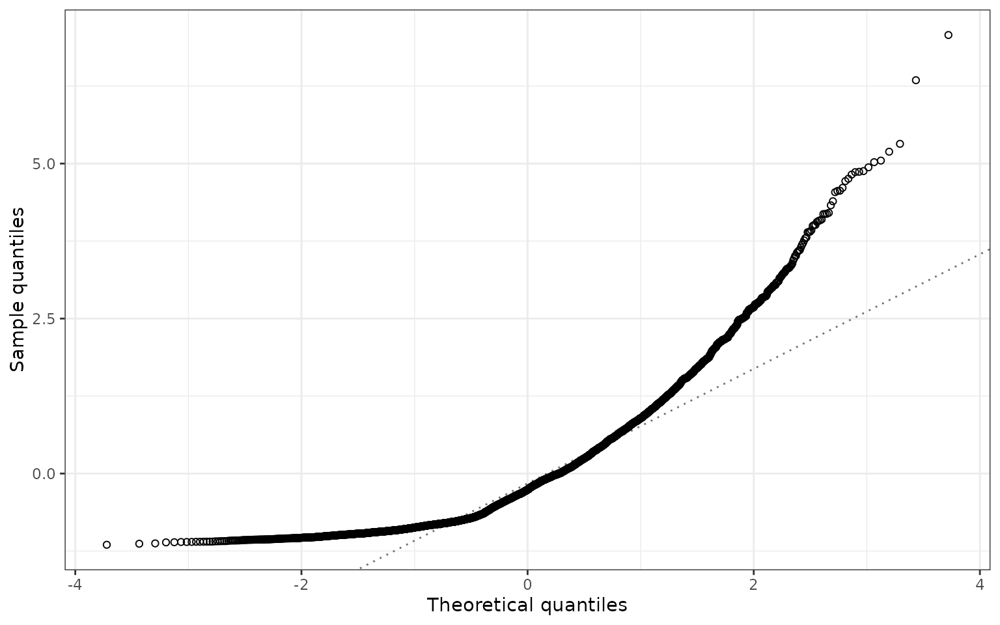

Three complementary questions
A CPUE model needs more than a plausible-looking index. We need to ask whether it describes the observations adequately, what drives the standardised index, and how robust that index is to modelling choices. Residual checks address the first question; influence, CDI, and step plots primarily address the second. Comparing credible candidate models helps address the third. None is a substitute for the others.
This article uses the same simulated lobster CPUE example as Influence diagnostics. It includes deliberately incomplete and poorly fitting candidates, not just the preferred example model. The aim is to connect a visible diagnostic pattern to a possible modelling response, without turning individual plots or p-values into automatic selection rules.
| influ2 helper | Question it helps answer | Important limitation |
|---|---|---|
plot_predicted_residuals() |
Does residual behaviour change with the fitted mean? | Uses the fitted model’s native residual definition; it is not a predictive interval plot. |
plot_implied_residuals() |
Do groups suggest departures from the common year effect? | An exploratory CPUE display, not a fitted interaction or a distributional goodness-of-fit test. |
plot_qq() |
How does the residual distribution compare with normal quantiles? | Count-model Pearson and deviance residuals need not be normal, even under a suitable model. |
These functions take a fitted model, not an influ_diag
summary: the latter deliberately does not retain all observation-level
predictions and residuals.
Fit competing lobster models
The data include uneven sampling across years and months, changing depth and soak time, and gaps in coverage. Catch was simulated from a negative-binomial distribution. We fit a reduced negative-binomial model that omits depth and soak time, a fuller negative-binomial model, and a Poisson model with the same full mean formula. All use exactly the same observations.
data(lobsters_per_pot)
lobster_reduced <- MASS::glm.nb(
lobsters ~ year + month,
data = lobsters_per_pot
)
lobster_nb <- MASS::glm.nb(
lobsters ~ year + month + poly(depth, 3) + poly(soak, 3),
data = lobsters_per_pot
)
lobster_poisson <- glm(
formula(lobster_nb), family = poisson(link = "log"),
data = lobsters_per_pot
)MASS is optional. The executed model examples are
skipped if it is not installed. Nothing in this article fits an MCMC
model.
Residuals against fitted values and predictors
Pearson residuals divide response errors by the model’s observation standard deviation. Look for a changing centre, unusual spread, or influential tails, but remember that low fitted counts produce asymmetry and discrete bands. The residual axis must retain both negative and positive values.
patchwork::wrap_plots(
plot_predicted_residuals(lobster_reduced) + labs(title = "Reduced NB"),
plot_predicted_residuals(lobster_nb) + labs(title = "Full NB"),
ncol = 2
)
Pearson residuals against fitted lobster catch for reduced and full negative-binomial models. Blue smooths help reveal changes in the residual centre; the dotted line marks zero.
A fitted-value plot can hide structure in an omitted covariate. Plotting the same residuals against depth and soak time is more direct. Here a systematic pattern in the reduced model motivates including those relationships, rather than treating extra dispersion alone as a solution.
residual_data <- do.call(rbind, lapply(
c("Reduced NB", "Full NB"), function(label) {
fit <- if (label == "Reduced NB") lobster_reduced else lobster_nb
r <- residuals(fit, type = "pearson")
rbind(
data.frame(model = label, predictor = "Depth (m)",
value = lobsters_per_pot$depth, residual = r),
data.frame(model = label, predictor = "Soak time (hours)",
value = lobsters_per_pot$soak, residual = r)
)
}
))
residual_data$model <- factor(
residual_data$model, levels = c("Reduced NB", "Full NB")
)
ggplot(residual_data, aes(value, residual)) +
geom_hline(yintercept = 0, linetype = 3, colour = "grey45") +
geom_point(alpha = 0.08, size = 0.5) +
geom_smooth(method = "loess", formula = y ~ x, se = FALSE) +
facet_grid(model ~ predictor, scales = "free_x") +
labs(x = NULL, y = "Pearson residual")
Pearson residuals against depth and soak time. The reduced model omits both predictors; the full model includes their polynomial effects. Smooth trends reveal structure that a fitted-value plot can conceal.
For real fisheries, repeat this examination against vessel, gear, year, season, and location. Sparse regions and changing fleet composition deserve particular attention. A smooth is descriptive: these are in-sample residuals, not independent validation observations.
Implied residual coefficients
New Zealand inshore CPUE reports use implied coefficients to explore
departures from a shared year effect (Starr and Kendrick 2019; Middleton 2025). For each
year-by-group stratum, plot_implied_residuals() adds its
mean residual to the centred link-scale year effect. The common year
effect is grey; purple points show the implied departures. Here the
groups are months, but an area, vessel group, or other categorical
variable could be used.
plot_implied_residuals(
lobster_nb,
data = lobsters_per_pot,
year = "year", groups = "month", min_n = 10
)
Implied year coefficients by month for the full negative-binomial lobster model. Grey lines show the common centred year effect; purple values add each stratum’s mean Pearson residual. Bars are plus or minus one standard error of that residual mean, and point size represents record count. Strata with fewer than 10 records are omitted.
The bars exclude uncertainty in the year coefficient and its covariance with the residual mean; they are not confidence intervals for a fitted year-by-month interaction. Adding a Pearson residual to a link-scale effect is an interpretive convention, not an exact interaction estimator. Native residual scaling also differs between model packages. Persistent departures suggest checking sampling support and an explicit interaction or other structure, then refitting and reassessing the model.
Keep the original observation row names when supplying
data. influ2 aligns omitted, subsetted, or reordered rows
with the fitted model, and rejects data whose identity cannot be
verified. This prevents residuals from being assigned silently to the
wrong year or group.
Normal Q-Q plots: useful, but not universal
plot_qq(lobster_nb, type = "pearson")
Normal Q-Q plot of Pearson residuals from the full negative-binomial model. Curvature is not, by itself, evidence against the count model: these residuals are not expected to be normally distributed.
The reference line in plot_qq() passes through the
chosen quantiles (the first and third quartiles by default). Its
probs argument does not define a confidence envelope.
Normal residual Q-Q plots are most natural for Gaussian errors; for
counts, zeros, skewed positive responses, and mixtures, use a
distribution-aware check as well.
Simulation-based checks with DHARMa
DHARMa supplies simulation-based quantile residuals and associated diagnostics (Hartig 2026). It is a suggested, optional dependency, not part of the compact influence calculation. The following example contrasts Poisson and negative-binomial variation while holding the mean formula fixed.
dharma_poisson <- DHARMa::simulateResiduals(
fittedModel = lobster_poisson, n = 250, refit = FALSE, seed = 20260907
)
dharma_nb <- DHARMa::simulateResiduals(
fittedModel = lobster_nb, n = 250, refit = FALSE, seed = 20260907
)Each object is calculated once and reused. With
refit = FALSE, simulated responses are generated from the
fitted parameters; the model is not refitted 250 times. This quick
example uses 250 simulations. For substantive work, increase that number
and check stability. Simulation storage still scales with observations
times simulations, independently of influ2’s compact
uncertainty-retention settings.
par(mfrow = c(1, 2))
DHARMa::plotQQunif(
dharma_poisson, testUniformity = FALSE, testOutliers = FALSE,
testDispersion = FALSE, main = "Poisson"
)
DHARMa::plotQQunif(
dharma_nb, testUniformity = FALSE, testOutliers = FALSE,
testDispersion = FALSE, main = "Negative binomial"
)
DHARMa uniform Q-Q checks for Poisson and negative-binomial lobster models with identical mean formulas. The Poisson model does not accommodate the simulated overdispersion. Formal tests are suppressed here so interpretation starts with the diagnostic pattern.
DHARMa residuals are approximately uniform on zero to one under an adequate simulation model, not normally distributed. Do not feed them into a normal Q-Q plot without a deliberate transformation. Distributional agreement does not rule out remaining covariate patterns:
par(mfrow = c(1, 2))
DHARMa::plotResiduals(
dharma_poisson, form = lobsters_per_pot$depth, quantreg = FALSE,
main = "Poisson: depth"
)
DHARMa::plotResiduals(
dharma_nb, form = lobsters_per_pot$depth, quantreg = FALSE,
main = "Negative binomial: depth"
)
Simulation-based quantile residuals against depth for the two full-mean lobster models. The thin black dashed line marks the uniform median of 0.5; the thicker dashed curve is a descriptive smooth. Depth is rank-scaled. These are not independent validation tests.
The simulated responses can also check quantities of direct fisheries interest. Compare the observed proportion of empty pots and the upper catch quantile with the same quantities calculated from each simulated dataset. These are predictive checks at fitted parameters, not posterior predictive checks or confidence intervals for an index.
statistics <- list(
"Empty-pot proportion" = function(x) mean(x == 0),
"95th catch percentile" = function(x) unname(quantile(x, 0.95))
)
simulations <- list(Poisson = dharma_poisson, NB = dharma_nb)
predictive_checks <- do.call(rbind, lapply(names(simulations), function(model) {
do.call(rbind, lapply(names(statistics), function(statistic) {
data.frame(
model = model, statistic = statistic,
value = apply(simulations[[model]]$simulatedResponse, 2, statistics[[statistic]])
)
}))
}))
observed_checks <- data.frame(
statistic = names(statistics),
observed = vapply(statistics, function(f) f(lobsters_per_pot$lobsters), numeric(1))
)
ggplot(predictive_checks, aes(value)) +
geom_histogram(bins = 20, fill = "grey75", colour = "white") +
geom_vline(data = observed_checks, aes(xintercept = observed),
colour = "purple4", linewidth = 0.8) +
facet_grid(model ~ statistic, scales = "free_x") +
scale_y_continuous(limits = c(0, NA), expand = expansion(mult = c(0, 0.05))) +
labs(x = "Statistic across one simulated dataset", y = "Simulated datasets")
Observed empty-pot proportions and upper catch quantiles (purple lines) against their distributions across 250 simulated datasets. The histograms expose consequences of the candidate observation distributions that a standardised index alone does not show.
More zeros than simulated do not prove that a zero-inflated model is needed: the mean structure or dispersion can also be wrong. For hurdle or delta models, check encounter probability, the positive-response distribution, and the combined response. The combined check alone can conceal compensating errors in the components.
Which residuals answer which question?
| Residual or approach | Useful for | What to watch |
|---|---|---|
Response, y - fitted
|
Errors in catch or CPUE units; patterns against predictors | Variance often changes with the mean; tails and zeros depend on the family. |
| Pearson | Mean/variance patterns after scaling by the model’s observation SD | Not generally normal for non-Gaussian data; native weighting and Bayesian definitions differ. |
| Deviance | Signed contributions based on likelihood discrepancy | Family-specific, not automatically normal, and not supplied by every backend. |
| PIT / randomised quantile | Distribution-aware checks using a predictive CDF | Discrete observations require randomisation; conditioning and estimated parameters affect calibration. |
| DHARMa | Simulation-based quantile checks, predictive summaries, and residual-pattern tools | It implements a PIT-like approach, rather than a distinct residual principle; simulations must match the response and hierarchy being checked. |
| One-step-ahead (OSA) | Sequential predictive checks in dependent latent-variable models | Requires suitable implementation, an observation order, and accurate conditional prediction; often more expensive. |
At a probability mass, a randomised PIT value is drawn between the
CDF just below the observation, F(y-), and
F(y). For integer counts this becomes F(y - 1)
to F(y); hurdle and Tweedie responses require randomisation
at their zero atom. Applying qnorm() puts the result on the
standard-normal scale (Dunn and Smyth 1996). At continuous
responses, use F(y) directly. Exact reference distributions
assume the correct predictive distribution with known parameters;
fitted-model checks generally have approximate calibration. Keep a
reproducible seed and check sensitivity to randomisation, rather than
choosing the most attractive plot.
Random effects, space, and time
Conditioning is a separate choice from residual scale. Conditional simulations hold fitted random effects fixed and focus on observation-level behaviour; unconditional simulations regenerate random effects and inspect more of the hierarchy. Neither by itself validates the whole model. For latent spatial fields, plugging in fitted modes can distort goodness-of-fit diagnostics.
DHARMa changed its default to conditional simulations in version 0.5.0. Record the package version and the conditioning used, and consult the native simulation method rather than assuming that identical arguments mean the same thing in every backend. The DHARMa development NEWS also records a fix after 0.5.0 for mutation of glmmTMB simulation settings; check that fix before using that combination for repeated production diagnostics. See the DHARMa documentation and NEWS.
Map residuals and inspect them through time as well as against predictors. Spatial or temporal dependence can invalidate routine independent-residual test p-values. Repeated locations and timestamps need appropriate grouping, and that grouping changes the question being tested. A well-calibrated in-sample plot does not establish out-of-sample predictive skill.
sdmTMB
sdmTMB recommends type = "mle-mvn" PIT residuals: fixed
effects stay at their maximum-likelihood estimates, while one
approximate conditional random-effect draw is used. These are
not OSA residuals. Its "mle-eb" plug-in
mode is discouraged for goodness-of-fit checks; the
"mle-mcmc" alternative requires a suitable converged MCMC
draw. See the native
residual reference and worked
residual examples.
For a single-response model such as pcod_model in Spatial and spatiotemporal
diagnostics, the native normal-scale PIT residuals can be displayed
with influ2:
set.seed(41)
plot_qq(pcod_model, type = "mle-mvn") +
geom_abline(intercept = 0, slope = 1, colour = "purple4") +
labs(subtitle = "Purple: standard-normal identity; grey: fitted quartile line")Unlike the fitted quartile line, the identity reference also reveals location and scale departures from the expected standard-normal PIT distribution.
sdmTMB also has a dedicated DHARMa bridge. The following recipe reuses an already fitted model; it is not evaluated again in this article.
set.seed(41)
pcod_simulations <- simulate(pcod_model, nsim = 250, type = "mle-mvn")
pcod_dharma <- sdmTMB::dharma_residuals(
pcod_simulations, pcod_model, plot = FALSE, return_DHARMa = TRUE
)
DHARMa::plotQQunif(
pcod_dharma, testUniformity = FALSE,
testOutliers = FALSE, testDispersion = FALSE
)The sdmTMB bridge can check the combined delta/hurdle response. Its analytical residuals instead select a component. influ2’s three generic residual helpers currently reject sdmTMB delta fits: pairing occurrence residuals with unconditional fitted catch would be misleading. Use the native component-specific workflow and matching predictions instead. Native Pearson support is also family-specific; influ2 does not silently replace it with another residual type.
tinyVAST
The tinyVAST 1.6.2 interface provides deviance and response residual types, not Pearson residuals or an OSA convenience interface. In checks against that version, single-response deviance residuals worked with all three influ2 helpers. Its native response method returned an empty vector, so influ2 now reports that failure clearly rather than drawing an empty diagnostic.
plot_predicted_residuals(tiny_model, type = "deviance")
plot_qq(tiny_model, type = "deviance")The tinyVAST
simulation interface can support an external
DHARMa::createDHARMa() workflow, but it needs careful
response selection and observation alignment for multivariate models.
Its "mle-mvn" simulation draws a new approximate
random-effect vector for each replicate, unlike sdmTMB’s single-draw
residual recipe. This article does not claim those procedures have
identical calibration, or provide an automatic multivariate DHARMa
adapter.
GLM, GAM, glmmTMB, and BRMS
The ordinary GLM, GAM, and glmmTMB residual plots use their native
methods. Current glmmTMB also provides a "dunn-smyth"
option, but family and version limitations matter, including fixes for
multi-trial binomial responses. Do not assume it handles every
zero-inflated mixture correctly. The glmmTMB
residual source and release notes
describe the available implementation. Being built on TMB does not
itself provide an OSA interface.
For BRMS, use the original complete
brmsfit. The compact example fixtures in influ2
retain joint draws for influence calculations but omit the Stan state
needed by native prediction and residual methods. They cannot support
these residual helpers, get_bayes_R2(), or
table_criterion(). Those two comparison helpers remain
BRMS-specific; they are not generic frequentist model-selection
tables.
BRMS’s native residual summaries depend on its prediction method;
Pearson residuals are based on predictive dispersion, not simply the GLM
formula. Posterior predictive checks (brms::pp_check()) can
retain features obscured by a residual mean. Reusing a full fitted model
does not rerun MCMC, but prediction across posterior draws can still
require substantial memory. See the BRMS
residual reference.
OSA is a specialised additional workflow
OSA residuals use the predictive distribution of each observation
conditional on the preceding observations, which can account for latent
dependence (Thygesen
et al. 2017). The order and conditioning set must therefore
be explicit. TMB offers oneStepPredict(),
but its methods require suitable template support and approximation
checks. They are not universally available through
residuals() in glmmTMB, sdmTMB, or tinyVAST. influ2 does
not yet implement an OSA adapter. Likewise, a refitting simulation study
is a separate, potentially costly validation exercise, not a default
action performed by a residual plot.
Connect model checks back to the index
An observation model that fails to reproduce dispersion or zeros may
still produce a plausible year curve. Conversely, changing a
well-supported mean relationship can materially alter the index. After
inspecting residuals, use plot_compare() and refitted step
plots to explain those consequences; the main
article demonstrates both.
Keep the same observations, years, response component, and index scale when comparing models. influ2’s current comparisons are centred year-effect contrasts, not area-weighted abundance indices. Prediction-grid coverage, area expansion, and extrapolation are additional downstream checks.
The practical sequence is to identify a residual pattern, consider plausible data or model explanations, fit defensible alternatives, and then inspect both model adequacy and index sensitivity. Residual tests alone should not decide which CPUE series enters an assessment.